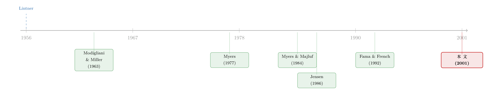

把 CFO 们叫来对一次答案：理论说该这么做，他们真的这么做了吗？
本文读的是 Graham & Harvey (2001, Journal of Financial Economics)：他们向 392 位 CFO 发出问卷，把「资本预算、资本成本、资本结构」三件事一次问个遍，结果发现——大公司确实在用净现值和 CAPM，小公司却仍在用回收期这种被教科书批了几十年的「土办法」；更扎眼的是，相当多的公司在评估一个新项目时，用的是整个公司的风险，而不是那个项目自己的风险。理论与实践之间，原来隔着这么宽的一条河。
1 一个没人敢问、却人人想知道的问题
金融学里有一类问题，模型推得再漂亮，最后总绕不开一句追问：真有人这么干吗？
净现值 (net present value, NPV) 法则写进了每一本公司金融教材的第一章；资本资产定价模型 (capital asset pricing model, CAPM) 是 MBA 课堂上算折现率的「标准答案」；资本结构的取舍理论 (trade-off theory)、啄食顺序理论 (pecking-order theory)，更是几十年里被反复检验、反复争论。可这些理论，到底有没有真正住进 CFO 们的脑子里？还是说，它们只是学者们自娱自乐的一套话术，而真实世界的财务总监，靠的是另一套我们从没认真问过的「江湖规矩」？
这件事，其实早就有人做过一次教科书级的示范。1956 年，John Lintner 跑去访谈了一批公司的高管，问他们到底怎么定股利，结果总结出了那个直到今天还在被引用的「Lintner 模型」——公司不愿意轻易动股利，只在盈利「持久地」上升后才缓慢调高。这项研究深刻地改变了后来股利政策的研究方式。
Graham 和 Harvey 想做的，正是 Lintner 当年那件事的「升级版」。只不过这一次，他们不满足于只问股利一件事。
2 他们把三件大事，一次问个遍
先说他们的雄心在哪。
以往的公司金融问卷，要么只盯着资本预算，要么只问资本结构，而且几乎清一色只调查最大的那些公司——Gitman & Forrester (1977) 问了 103 家大公司，Moore & Reichert (1983) 问了 298 家《财富》500 强。样本既小又偏。
Graham-Harvey 的做法不同。他们和美国财务经理人协会 (Financial Executives Institute, FEI) 合作——这个协会有约 14,000 名会员，都是 8,000 家公司里说了算的 CFO、财务主管和审计长。1999 年 2 月，他们一边从杜克大学给《财富》500 强的 CFO 寄信，一边让 FEI 向 4,440 家会员公司群发传真。最后回收了 392 份完整问卷，回应率约 9%。
这个数字听起来不高，但要知道问卷有整整三页、100 多道题，能让这么多日理万机的 CFO 坐下来认真填完，已经相当不易。作者还专门做了无应答偏差 (nonresponse bias) 检验，并在附录里论证：这个样本在规模、行业等维度上，能代表它所抽自的那个总体，也大体能代表 Compustat 里的公司。
问卷调查在公司金融里其实是个「少数派」方法。它最大的软肋，作者自己也老实承认：问卷量的是「信念」，不是「行动」。CFO 说他「总是用 NPV」，我们没有办法去核实他是不是真的算过。但它的好处也正在于此——大样本回归能给你统计功效，临床案例 (clinical study) 能给你细节，而问卷恰好卡在中间：既有不算小的样本，又能问出那些回归数据里永远问不到的、定性的「为什么」。
但真正让这篇论文跳出「又一份问卷」的，是第三步：他们把回答按公司特征切开来看。规模、市盈率、杠杆、信用评级、股利政策、行业、管理层持股、CEO 的年龄、任期、甚至 CEO 有没有 MBA 学位——每一个回答，都被放到这些维度下做条件比较。于是这份问卷不再只是「大家都怎么做」的描述，而成了一台检验各种公司金融理论的仪器。
（这种「直接去问当事人」的实证精神，后来在另一篇同门作品里被推到了极致——直接问 4,641 家公司有没有在「看着股价做决策」，可参见《从马嘴里掏答案》。）
3 第一处反转：方法对了，对象错了
先看资本预算这一块，结果初看是「令人欣慰」的。
问卷让 CFO 们在 0 到 4 的尺度上打分（0 = 从不用，4 = 总是用）。结果，净现值和内部收益率 (internal rate of return, IRR) 双双登顶：74.9% 的 CFO 总是或几乎总是使用 NPV（平均分 3.08），75.7% 用 IRR（平均分 3.09）。相比二十多年前 Gitman-Forrester 调查里 NPV 只有 9.8% 的惨淡占比，净现值法的地位显然是一路攀升了。教科书赢了——至少看上去是。
接着，一个自然的问题是：所有公司都这样吗？
不是。这里出现了贯穿全文的第一条暗线——规模。大公司用 NPV 的评分高达 3.42，小公司只有 2.83，差距高度显著。而被金融教科书「批判了几十年」的回收期法 (payback period)，整体评分 2.53，在小公司那里却高达 2.72——几乎和它们用 NPV、IRR 一样频繁。
回收期法的毛病是明摆着的：它无视货币的时间价值，也无视截止日之后的所有现金流，而那个截止日往往是拍脑袋定的。那为什么小公司还这么爱用它？
有人替它辩护，说对于严重缺钱的公司，回收期其实是「理性」的（Weston and Brigham, 1981）。但 Graham-Harvey 找不到证据：回收期的使用，和杠杆、信用评级、股利政策都没有关系。真正和它相关的是另一组特征——回收期最受年纪大的、任期长的、没有 MBA 的 CEO 青睐（成熟 CEO 评分 2.83）。换句话说，与其说这是一种精明的资金约束应对，不如说它就是不够「老练」的产物。
但故事并没有在「小公司比较土」这里收尾。真正关键、也最让人后背发凉的一步在于：很多公司根本用错了折现率的「层级」。论文反复强调的一个发现是——大量公司在评估具体项目时，用的是全公司统一的折现率 (company-wide discount rate)，而不是项目自己的折现率 (project-specific discount rate)。
这是什么意思？想象一家稳健的公用事业公司，要去投一个高风险的新业务。教科书告诉你：该用这个新项目对应的风险来折现。可现实里，不少 CFO 直接套用了公司整体那个偏低的折现率——于是高风险项目被系统性地「高估」了。方法是对的（用了折现），对象却错了（用错了风险）。理论的形,学到了；理论的神，漏掉了。
（顺带一提，「按 NPV 选项目」本身在某些情形下竟也会「选不出最高的 NPV」，这是另一层更微妙的吊诡，可参见《为什么「按 NPV 选项目」反而选不出最高的 NPV？》。）
4 资本成本：CAPM 赢了，但它赢得有点孤独
顺着折现率往下走，下一个问题就是：这个折现率，CFO 们到底是怎么算出来的？
答案在权益资本成本 (cost of equity) 这一问上：73.5% 的受访者用 CAPM 来估计权益成本，CAPM 是迄今最流行的方法，把市场贝塔 (market beta) 一乘，折现率就出来了。其次是历史平均收益、以及加了额外风险因子的多贝塔 CAPM。
这是个有意思的结果。要知道，1992 年 Fama 和 French 那篇著名的论文已经对单因子 CAPM 的实证有效性提出了严重质疑（Fama and French, 1992）。可学界吵得不可开交的时候，实务界却把 CAPM 当成了默认工具——理论的「前沿争论」和实践的「标准操作」之间，存在着明显的时滞。学者们在拆 CAPM 的台，CFO 们还在天天用它。
5 第二处反转：资本结构里，CFO 真正在怕什么
如果说资本预算的部分是「理论部分赢了」，那么到了资本结构这一块，画风彻底变了——这里几乎是理论的滑铁卢，也是这篇论文最辛辣的地方。
学者们为「公司到底怎么决定借多少债」吵了几十年，造出了一座理论的动物园：取舍理论说，债务的税盾好处要和破产成本权衡；啄食顺序理论（Myers and Majluf, 1984）说，因为信息不对称，公司融资有个先后次序——先用内部资金，再发债，最后才不得已发股；还有资产替代 (asset substitution)、自由现金流 (free cash flow)、个人税……每一个都对应着一篇甚至一串经典论文。
那么，CFO 们脑子里真正装的是哪一套？
Graham-Harvey 的答案近乎冷酷：都不太是。 他们发现，决定债务政策最重要的两个因素，根本不是这些精致的理论变量，而是两个朴素到近乎「常识」的东西——财务灵活性 (financial flexibility) 和一个好的信用评级 (credit rating)。CFO 们要的是「手里留有余地」，是「别把评级搞砸了」。
发股票的时候呢？他们最在意的也不是信息不对称这种学术概念，而是每股收益的稀释 (earnings per share dilution)，以及近期的股价是不是涨上去了——股价高了才愿意发，活脱脱一副「市场择时」的样子。
而对那些被理论奉为圭臬的深层机制，问卷里几乎找不到回声：几乎没有证据表明高管们在担心资产替代、信息不对称、交易成本、自由现金流，或者个人税。
这就构成了全文的核心张力，也是它最大的贡献所在：公司金融的理论越做越精巧，而真实的 CFO 们却在靠一套实用的、非正式的「拇指法则 (rules of thumb)」做决定。 论文对取舍理论和啄食顺序理论各找到了「一些支持」——比如大公司里有紧或较紧的目标负债率的占多数，小公司只有三分之一有——但对那些更深的理论含义，证据稀薄。
这里要替理论留一句公道话，作者自己也说了：他们「承认但没有去检验」一种可能——那些深层机制（比如信息不对称、自由现金流）也许已经被「压」进了价格和信用评级里，于是 CFO 们是在间接地对它们做出反应。他在意评级，可能恰恰就是在间接地回应破产成本。问卷照见的是高管「意识到的动机」，照不见那些已经内化、说不清道不明的均衡力量。
（关于啄食顺序理论后来在大样本里遭遇的尴尬——「该发债的公司偏偏去发了股」，可参见《啄食顺序理论的滑铁卢》；而把「税」拧成公司金融一根主线的综述，则见《100% 借债，还是一分不借？》。）
6 文献脉络
把这篇论文放回它的家谱里，线索其实很清晰。
源头是 Lintner (1956)：他用访谈的方式，第一次让「问当事人」这种笨办法在公司金融里登堂入室，开创了「田野研究」的范式。与此同时，理论这条线在飞速生长——Modigliani 和 Miller (1963) 把税收引进资本结构，奠定了取舍理论的地基；Myers (1977) 用「公司借债的决定因素」一文，把增长机会、债务与代理问题串了起来；Myers 和 Majluf (1984) 提出啄食顺序，把信息不对称推到了资本结构的中心；Jensen (1986) 则用自由现金流的代理成本，给债务找了一个全新的「纪律」角色。

理论这边枝繁叶茂，问卷这边却一直停留在小样本、只问大公司的初级阶段（Gitman & Forrester, 1977；Moore & Reichert, 1983）。Graham-Harvey (2001) 的位置，正是这两条线的交汇点：它继承了 Lintner 的田野精神，却用一个跨越三大领域、近 4,440 家公司的大样本，去逐一对质那座理论动物园。它不是要提出新理论，而是要替整个学科做一次「实践体检」——告诉理论家们，哪些假说真的活在 CFO 的脑子里，哪些只活在论文里。这也正是为什么二十多年过去，它依然是公司金融被引用最多的论文之一。
7 评论与延伸（Q&A + 研究方向）
(a) 几个可能的疑问
Q：9% 的回应率这么低，结论还能信吗？
这是问卷研究的「原罪」，但作者处理得相当谨慎。首先，考虑到问卷有三页、超过 100 题，9% 其实并不算低——同期 Trahan & Gitman (1995) 对 700 位 CFO 的调查回应率也才 12%。其次，作者专门做了无应答偏差检验，并在附录里论证样本在规模、行业上能代表总体、也大体贴合 Compustat。当然，「填问卷的人和不填的人系统性不同」这个隐忧无法被彻底排除，只能说被压到了较小。
Q：问卷量的是「说法」，不是「做法」，这难道不是致命伤？
这是最该警惕的一点，作者自己在文中反复强调「responses represent beliefs」。CFO 说他用 NPV，我们无从核实他真算过。但要看到两点：其一，对于「我在不在乎信用评级」这类动机性问题，问卷恰恰是唯一能直接问到的工具，回归数据里根本没有这个变量；其二，这篇论文的价值不在某个单一数字的精确，而在跨特征的相对比较——大公司 vs 小公司、有 MBA vs 没 MBA——这种相对差异即便有「说法偏差」，也大体会同向地抵消掉一部分。
Q：「用全公司折现率而非项目折现率」，真的算错吗？会不会是一种理性的简化？
严格按教科书，这是错的——它会系统性高估高风险项目、低估低风险项目，导致资本错配。但确实可能是一种「理性的偷懒」：项目层面的贝塔极难估计，统一折现率省事且不易被下属操纵。论文的价值在于把这个普遍现象摆上了台面，至于它造成的福利损失有多大，是后续研究的事。
Q：CFO 最在乎「财务灵活性」，这到底支持还是反对取舍理论？
微妙。表面看，「留有余地」更像一种期权思维（保留未来举债的能力），既不完全是取舍理论，也不完全是啄食顺序。它可以被解读为啄食顺序的一个变种（留着低成本融资的余地），也可以被解读为取舍理论里「破产成本」的通俗版（怕评级掉、怕没钱周转）。论文诚实地说：两套理论都得到「一些支持」，但谁也没被证实是主导。
Q：为什么对「个人税、自由现金流」这些机制几乎零证据？是理论错了吗？
不一定。作者明确提出一种辩护：这些深层力量可能已经被「impounded」进了价格和信用评级，CFO 是在间接回应它们。这其实是问卷方法的一个根本局限——它能问出高管「意识到的」动机，却问不出那些已经内化进市场均衡、当事人自己都说不清的力量。所以「零证据」不等于「理论被证伪」，只能说「高管的主观意识里没有它」。
Q：这篇 2001 年的论文，结论到今天还成立吗？
大方向大概率仍成立：NPV/IRR/CAPM 作为主流工具、规模作为最强的分界线、CFO 偏好拇指法则——这些都被后续无数研究反复印证。但具体数字会漂移：CAPM 之外的多因子模型、实物期权工具的普及度，二十多年里应该都有变化。这恰恰说明这类「实践快照」需要定期重拍。
(b) 几个可能的研究问题与提案
1. 把「信念」和「行动」对上账。
【经济故事】这篇论文最大的软肋是只问了说法。如果能把 CFO 问卷里的「我总是用 NPV / 我在乎信用评级」与该公司事后真实的投融资行为（Compustat 里的资本支出、发债发股记录、实际杠杆变动）匹配起来，就能第一次量出「说」与「做」之间的缺口有多宽，以及哪类公司缺口最大。 【可行性】中。难点在于问卷是匿名的，但作者保留了一批公司特征，若能在保密框架下做特征层面的匹配（而非个体匹配），是可行的；FEI-Duke 后续季度调查也提供了重复观测的机会。
2. 「错用折现率」的资本错配代价有多大？
【经济故事】既然相当多公司用全公司折现率而非项目折现率，那么高风险业务部门就会被系统性高估、过度投资。能不能用多元化公司的分部数据，识别出哪些公司更可能「一刀切折现」，再看它们的高风险分部是否真的投得过多、回报更差？ 【可行性】中。需要分部层面的投资与回报数据（Compustat Segments），识别上可借「公司是否披露使用单一 hurdle rate」或行业分散度做代理，内生性是主要障碍。
3. 把这套问卷搬到信用市场 / 公司债发行人身上。
【经济故事】Graham-Harvey 问的是「借不借债」，但没细问「发什么期限、要不要担保、找银行还是发公开债」。在公司债和信用市场里，CFO 对「财务灵活性」和「信用评级」的执念，应该会以非常具体的方式写进债券的期限与契约设计——这正好接上「信用评级是 CFO 的头号关切」这条线。 【可行性】高。可设计针对公司债发行人的定向问卷，并与 Mergent FISD 的债券条款数据匹配，识别「评级关切强」的发行人是否系统性地选了更短期限、更多担保。这是公司债/信用市场方向上一个相当 doable 的延伸。
4. 外资持有人会改变 CFO 的「拇指法则」吗？
【经济故事】这篇论文是纯美国样本。一个自然的问题是：当一家公司的股东里多了大量外资机构（它们往往更看重项目层面的风险定价、更挑剔治理），CFO 还会不会满足于「全公司折现率」「凭股价择时发股」这类粗糙规则？外资持股或许会把实践往「教科书」方向推。 【可行性】中。需要跨国的 CFO 调查（如把 Graham-Harvey 问卷国际化的后续版本）配合外资持股数据；识别上可借指数纳入等可投资度冲击做准自然实验，但样本获取成本高。
5. 二十年后的重拍：拇指法则在退潮吗？
【经济故事】数据工具、实物期权、机器学习估值在这二十年里大举进入实务界。一个干净的问题是：NPV 的统治是否更稳固、回收期是否在退场、CAPM 是否被多因子取代、「项目折现率」的使用是否上升？这能直接刻画「学术工具向实践渗透」的速度。 【可行性】高。FEI-Duke 的季度 CFO 调查仍在持续，具备做「同口径、跨二十年」纵向比较的现成基础设施，是这条线最容易落地的方向。
8 我的判断
先说贡献。这篇论文的分量，不在于任何一个单独的数字，而在于它第一次用一个足够大、足够宽的样本，把公司金融的三大块同时摊开，逐一去对质理论。它把「理论与实践的鸿沟」从一句空泛的感慨，变成了一组可以引用的事实：NPV 赢了但折现率层级用错了、CAPM 在学界挨批却在实务界封神、资本结构理论的动物园在 CFO 脑中几乎只剩「灵活性」和「评级」两只活物。它给后来二十年的公司金融研究，立了一块「现实在哪里」的界碑。
再说担忧。最大的隐患始终是那句作者自己的坦白——它量的是信念，不是行动。一个 CFO 勾选「我总是用 NPV」，可能只是因为他知道「标准答案」该这么填；问卷天然会把回答往「显得专业」的方向拉。其次，9% 的回应率虽经检验，但「愿意花时间填三页问卷的 CFO」本身可能就是更上心、更老练的那一批，这会让实践显得比真实情况更「规范」一点。最后，对那些「零证据」的深层理论，论文给出的「已被价格吸收」的辩护，本质上是不可证伪的——它既救了理论，也让问卷无力裁决。
后续我最想看到的，是有人能把这份匿名问卷里的「说法」，和这些公司事后真金白银的「做法」对上账：到底是说一套做一套，还是言行一致？以及，在公司债和外资持有人这两个方向上，CFO 的「财务灵活性」执念会被翻译成怎样具体的期限选择与契约设计。把「问当事人」和「看真实行为」这两条腿绑在一起走，才是 Lintner 当年那条路真正该有的下一步。
参考文献
Fama, E.F., French, K.R. (1992). The cross-section of expected stock returns. Journal of Finance 47(2), 427–465.
Gitman, L.J., Forrester Jr., J.R. (1977). A survey of capital budgeting techniques used by major U.S. firms. Financial Management 6(3), 66–71.
Graham, J.R., Harvey, C.R. (2001). The theory and practice of corporate finance: evidence from the field. Journal of Financial Economics 60(2–3), 187–243.
Jensen, M.C. (1986). Agency costs of free cash flow, corporate finance, and takeovers. American Economic Review 76(2), 323–339.
Lintner, J. (1956). Distribution of incomes of corporations among dividends, retained earnings, and taxes. American Economic Review 46(2), 97–113.
Modigliani, F., Miller, M.H. (1963). Corporate income taxes and the cost of capital: a correction. American Economic Review 53(3), 433–443.
Moore, J.S., Reichert, A.K. (1983). An analysis of the financial management techniques currently employed by large U.S. corporations. Journal of Business Finance and Accounting 10(4), 623–645.
Myers, S.C. (1977). Determinants of corporate borrowing. Journal of Financial Economics 5(2), 147–175.
Myers, S.C., Majluf, N. (1984). Corporate financing and investment decisions when firms have information that investors do not have. Journal of Financial Economics 13(2), 187–224.
Trahan, E.A., Gitman, L.J. (1995). Bridging the theory–practice gap in corporate finance: a survey of chief financial officers. Quarterly Review of Economics and Finance 35(1), 73–87.